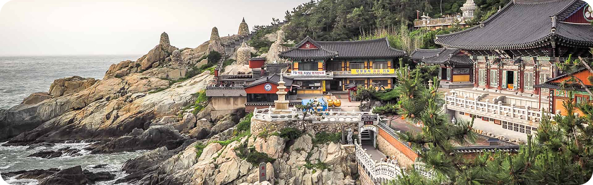
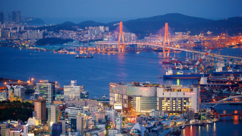
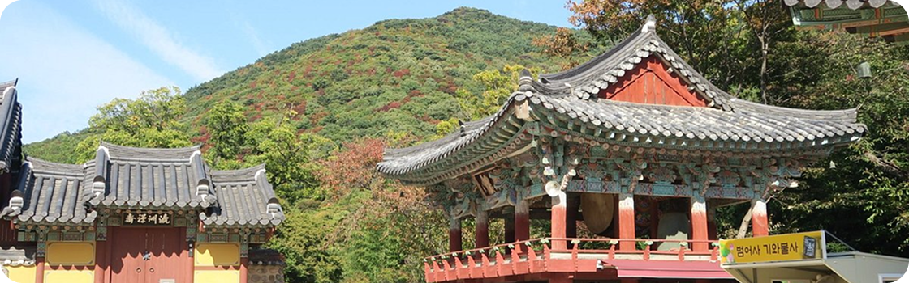
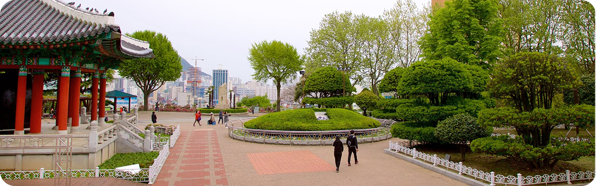

1. Templo Haedong Yonggungsa
Localizado no extremo nordeste de Busan, é um dos poucos templos na Coreia construídos à beira-mar.
Bom para:

Busan oferece de tudo, desde churrascarias de primeira linha até tradicionais barracas de comida de rua. Aqui, exploramos a segunda cidade da Coreia do Sul e descobrimos as suas ofertas culinárias.
As atrações de Busan vão desde templos budistas centenários que pontilham as montanhas até praias imaculadas com águas cristalinas.

Localizado no extremo nordeste de Busan, é um dos poucos templos na Coreia construídos à beira-mar.
Bom para:

Um dos maiores santuários da Coreia, localizado no alto da montanha Geumjeongsa, preservando a arquitetura da Dinastia Joseon.
Bom para:

Abriga monumentos importantes e a Torre Busan, oferecendo vistas espetaculares da cidade e museus culturais.
Bom para:
Busan é frequentemente vista como a essência da Coreia do Sul, oferecendo uma atmosfera única de diversidade étnica e cultural o ano todo.